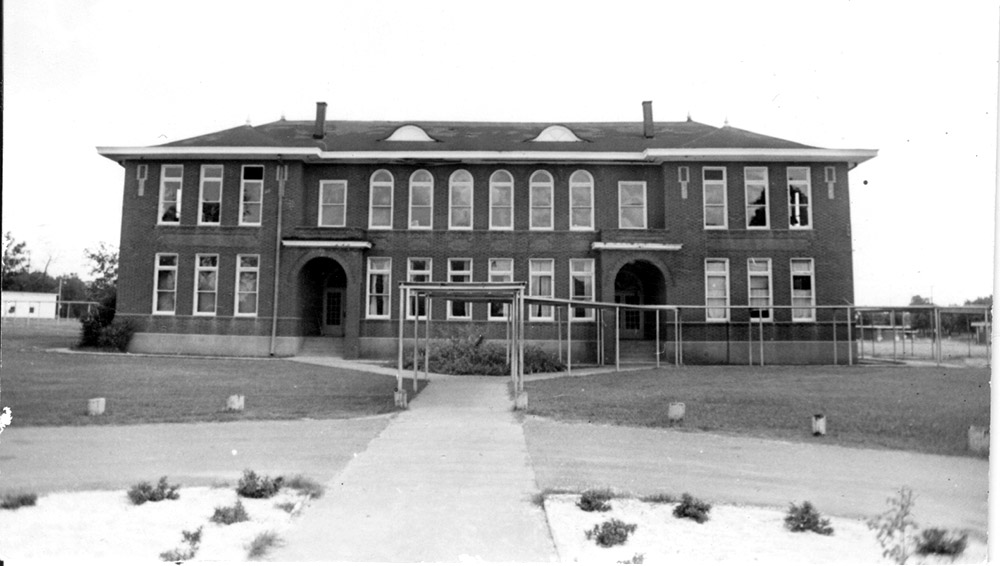

A narrative topic page compiled from council records, the Arkansas Leader, and the other sources listed at the bottom of the page. Resident discussion from Facebook groups is paraphrased into themes; no posts are quoted.
The Junior High North Fire of 2006
The story
On the afternoon of Thursday, August 10, 2006, Cabot Junior High North burned to the ground — on registration day, with students, parents, and teachers inside the building.

The school, at 38 Spirit Drive across from the football-field parking lot, was one of the district's newest buildings: a one-story, 115,400-square-foot school built in 1998, only eight years old. It housed grades seven through nine, and students in all three grades had been in and out of the building throughout that Thursday for registration.
The fire broke out just after 2 p.m. in a closet in the library. It was reported at the time as a suspected electrical fire; the account that has carried forward in reference works describes it as believed to have started as a small electrical fire in the library, possibly from a faulty light bulb. Administrators evacuated the building, and no one inside was hurt — roughly 100 people were in the school at the time. The blaze burned from about 2:30 p.m. to about 9 p.m. Firefighters worked roughly seven hours; by 9 p.m. the inner walls had collapsed and most of the roof was gone, and crews expected to keep watch over the site for at least two more days against flare-ups. Smoke was visible from as far away as Jacksonville. Cabot's fire and police departments have described it as one of the worst structure fires in the city's history. The building was a total loss.
The two injuries of the day were among the responders: two firefighters overheated in the roughly 100-degree heat and gusty winds and were taken by ambulance to the hospital. Crews came from Cabot, Jacksonville, North Pulaski Fire Rescue, Beebe, Ward, and Austin. Local restaurants, businesses, and residents brought food and bottled water to the scene — so much of it, the mayor said that night, that they eventually had to stop letting people in — and Mayor "Stubby" Stumbaugh parked his RV at the school so firefighters could cycle through its air conditioning to cool down.
The losses were counted in more than square feet. School board member Brooks Nash — who had been principal at Junior High South when Junior High North was built in 1998 — put the human scale of it plainly that day: some 1,200 students displaced and school records destroyed. A teacher had just finished painting a 50-star American flag mural in her classroom. A forensics teacher new to the district lost 12 years of teaching materials. The building held the largest cafeteria in the district, where the Cabot Scholarship Foundation held its annual banquet. One bitter footnote in the record: a 2005 state educational facilities report had scheduled the school for $339,690 in fire and safety improvements in 2008 — work that would now never be needed.
Mayor Stumbaugh said he would bring in State Police investigators the next day, and probably federal investigators as well, because the loss exceeded $1 million. Where students would go was unsettled even while the building was still burning. Board member Alan Turnbo said officials were already hunting for empty classrooms in the district's other schools and expected school to start on time; portable classrooms were the other stated option, though the portables that had stood at the high school had been removed the previous May, so new ones would have to be brought in, possibly on the low ground near the burned building.
Timeline
- - 1998 — Cabot Junior High North built at 38 Spirit Drive, serving grades 7–9.
- - 2005 — A state educational facilities report schedules the school for $339,690 in fire and safety improvements in 2008.
- - August 10, 2006, just after 2 p.m. — Fire breaks out in a closet in the school library during registration day. Everyone inside is evacuated; no one in the building is injured.
- - August 10, 2006, ~2:30–9 p.m. — The building burns and is a total loss. Two firefighters are hospitalized with heat-related illness. Crews from six departments respond.
- - February 19–20, 2007 — The Arkansas Insurance Department announces the final insurance settlement: $10 million for the building and about $2.1 million for contents, with Great American Insurance. The department's stated goal was to let rebuilding begin so students could return to a permanent facility as early as possible — an acknowledgment that, six months on, Junior High North students were still in temporary arrangements.
- - Fiscal year 2007 — The district's legislative audit records an insurance settlement received of $12,079,000, and lists a Junior High North construction contract with an estimated completion date of December 19, 2007.
- - April 1, 2008 — A district construction bond issue lists "completing the Junior High North" among its projects, alongside high school, Junior High South, and elementary work — bond money supplementing the insurance settlement to finish the rebuild.
- - August 2009 — The district's fiscal 2009 legislative audit lists the Junior High North project with an estimated completion of August 2009. The rebuilt school reopened about three years after the fire, in time for the 2009–10 school year; federal enrollment figures show about 1,167 students at Junior High North in 2009.
- - Today — Cabot Junior High North operates at 38 Spirit Drive, the same site. It now serves grades 7–8; ninth graders attend the Cabot Freshman Academy at 18 Spirit Drive, just down the street.
What residents remember
For an event that displaced roughly 1,200 students, the fire's footprint in Cabot's present-day online memory is surprisingly faint — and that contrast is itself part of the record.
What survives most vividly is the community response on the day itself, preserved in the contemporaneous reporting. Residents who were there remember a town that turned out: restaurants and businesses sending food and bottled water to the fire lines, teachers and coaches working alongside city crews, onlookers gathered at the administration building watching the smoke, and a mayor who lent his own RV as a cooling station and said that night he had never been prouder of his town. The personal losses lodged in memory, too — the teacher's just-finished flag mural, the new teacher's 12 years of materials, the destroyed records. Eight days after the fire, a Cabot resident writing on Wikipedia's discussion page for the city's article asked whether the fire deserved its own section, on the grounds that it was all anyone locally was talking about. That is the clearest surviving measure of how completely the fire dominated Cabot conversation in August 2006.
What did not turn up, in repeated searches of Cabot's large community Facebook groups in the fall of 2026 — across the main Cabot Strong groups, Cabot's Petty Citizens, WTF Cabot Arkansas, and several smaller groups, using many search phrasings — was a living anniversary tradition: no recurring "where were you" threads, no annual photo posts marking August 10, not even around the twentieth anniversary in August 2026. Group search tools are imperfect and favor recent posts, so this cannot prove no such posts exist. But the pattern matches what earlier mining of these groups found for Cabot history generally: the groups run on the present day, and organized nostalgia is rare — one local group's occasional "Cabot history" posts have covered other episodes entirely. The fire generation's memories appear to live in yearbooks, family stories, and the district's institutional memory rather than in the groups. If alumni accounts surface, this section is where they belong.
What the record shows
Established by documents: the date, place, and scale of the fire (August 10, 2006; 38 Spirit Drive; 115,400 square feet; total loss); that it began in a library closet during registration; that everyone inside got out unhurt and that two firefighters were treated for heat illness; the insurance money ($12,079,000 received in fiscal 2007 per the district's legislative audit; a final settlement of $10 million for the building plus about $2.1 million for contents per the Arkansas Insurance Department); that bond funds were also applied to completing the school (2008 bond official statement); and that the replacement building on the same site was complete by about August 2009 (fiscal 2009 audit) and operates there today.
Reported but not finally settled: the cause. Contemporaneous reporting called it a suspected electrical fire, and the summary that persists in reference works attributes it to a faulty light bulb in the library. State Police were to investigate, but no final official cause determination was located in any source consulted for this page. The cause should be stated as "reported as an electrical fire," not as a proven finding.
Gaps in the record, stated plainly:
- - Where Junior High North students and staff actually spent 2006–07 — and the two school years that followed — is not established. The day-of reporting records the plan (empty classrooms elsewhere in the district, portable buildings to be brought in), and the insurance department's February 2007 statement confirms students were still awaiting a permanent facility, but no source located says where classes were actually held, whether school started on time, or how the arrangement changed year to year. The Leader's 2006–07 print coverage is not digitized, and follow-up coverage has not surfaced online.
- - The total cost of the rebuild is not established. The documented figures are the $12.079 million insurance settlement and contract balances in the district audits; no source consulted states a final construction cost.
- - The investigation's outcome is not in any source found — see the cause note above.
Connected threads
- - Growth & Traffic — Junior High North was a product of Cabot's growth era: built in 1998 for a booming district, and its destruction and three-year rebuild played out amid the same building wave that produced the new high school.
- - What Eddie Joe Williams Is Running On — Williams took office as mayor in January 2007, five months after the fire; the rebuilt school rose and reopened during his first mayoral term.
- - The Lyon College Deal — Another chapter in Cabot's long pattern of betting on education facilities, from rebuilding a burned junior high to landing a veterinary school.
Sources
- - Arkansas Leader, "Fire takes Cabot school," by Sara Greene and Joan McCoy, with Garrick Feldman contributing (August 2006), read via the paper's online archive mirror, arkansasleader.blogspot.com. The Leader's 2006 print archive is not digitized; this is the principal contemporaneous account. Paraphrased throughout.
- - Arkansas Insurance Department news release, February 19, 2007, reprinted by Claims Journal, "Ark. Commissioner Commends Cabot School Fire Settlement," February 20, 2007 — final settlement figures and insurer.
- - Arkansas Division of Legislative Audit, Cabot School District No. 4 financial statements, fiscal years ended June 30, 2007 (insurance settlement received; construction commitments) and June 30, 2009 (Junior High North completion estimate), arklegaudit.gov.
- - Cabot School District No. 4 Construction Bonds, Series A, official statement, April 1, 2008 (EMMA, emma.msrb.org) — "completing the Junior High North" among bond-funded projects.
- - Wikipedia, "Cabot, Arkansas" — summary of the fire and reopening, and its discussion page (a resident's post of August 18, 2006 on the fire's local salience). Used as a secondary summary and a period artifact, not as a primary source.
- - Corpus registry:
online-sources/07-05-claims-journal-fire-settlement.mdin the Cabot history corpus. - - Current status of the school: Cabot Public Schools campus listings and Arkansas Leader coverage, 2023–2025, placing Cabot Junior High North (grades 7–8) at 38 Spirit Drive and the Cabot Freshman Academy at 18 Spirit Drive.
- - Facebook community groups (Cabot Strong groups, Cabot's Petty Citizens, WTF Cabot Arkansas, Cabot Strong (uncensored), Cabot Strong For Better Change, and others), searched October 31, 2026 with multiple query phrasings for retrospective or anniversary discussion of the fire; no such threads surfaced, as described in "What residents remember." Themes only; no posts quoted and no private individuals named.